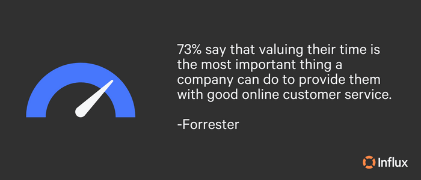
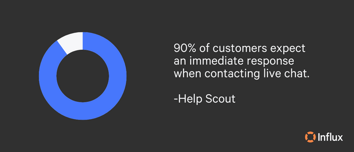
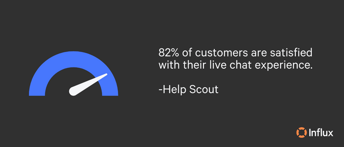
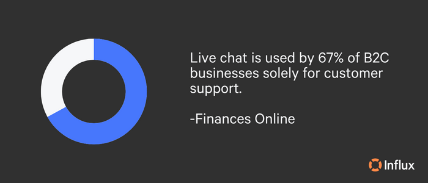
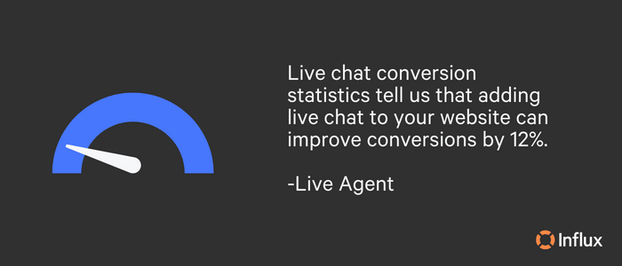
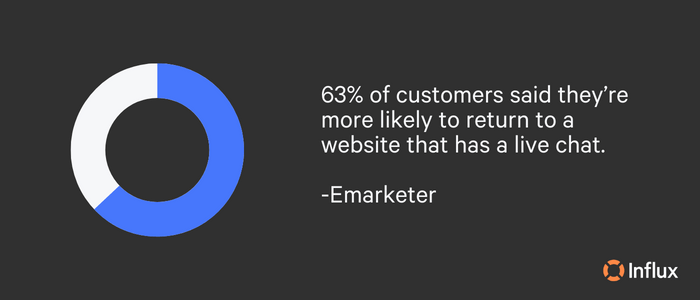
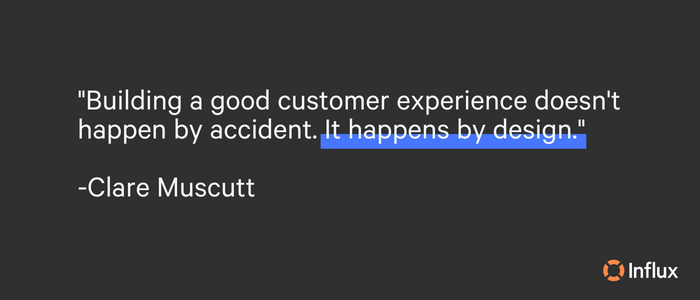

Live chat is a powerful selling tool and the preferred customer support method for many. We’ve been delivering fast, high-quality live chat support at scale for hundreds of clients. Believe us when we say we know what successful live chat looks like.
If you’re already offering live chat, optimize your support with the valuable information found in this blog. For businesses that don’t yet provide live chat, this complete guide will give you the full scope of what live chat entails, what it can do for your business if it’s right for you, and how you can employ best practices to offer the finest live chat experience for customers. Here’s a breakdown of what you can expect:
Why is live chat important for businesses?
The benefits of live chat in business
Is live chat right for your business?
What is live chat outsourcing?
Pros and cons of in-house vs. outsourced live chat
A seamless live chat experience
What is live chat support?
Live chat support allows customers to converse with agents in real time. Using live chat software embedded in a website, customers can open the chat widget and ask questions related to browsing, products, order details, and more. Then, support agents can quickly respond in the same window with answers and resources. Live chat provides the perfect solution for resolving customer queries promptly and efficiently.

Why is live chat important for businesses?
Imagine browsing a website and looking for something specific, but you can’t find it. The company doesn’t have live chat assistance, so you continue searching to no avail. Fairly quickly, you give up and leave the website, looking for a competitor with easier access to information.
The inability to find what they’re looking for is a frustrating experience for customers. According to Forrester, 53% of US online adults are likely to abandon their online purchase if they can’t find a quick answer to their question. Reducing pain points, simplifying processes, and supporting customers throughout their journey make it easy for them.
Imagine the same scenario, where you’ve been digging around a website and spot a chat widget in the bottom right-hand corner. You waste no time reaching out to the support team for answers, and they point you in the right direction within minutes, maybe even seconds. When customers can get their questions answered immediately, it increases conversions.
Live chat is essential because it creates an overall better customer experience since customers don’t have to waste time searching for answers. It also shows that a business is committed to providing excellent customer service and can help to attract and retain customers.
The benefits of live chat in business
Compared to non-real-time channels such as email or social media, live chat is immediate and allows for multitasking. Live chat support offers a range of benefits for businesses, including:
- Real-time assistance
- Increased sales
- Cost-effective compared to alternative support options
- Improved customer satisfaction
- Data collection
- Competitive advantage
- Improved customer experience (CX)
- Better customer acquisition and onboarding
- 24/7 support
Overall, live chat support provides a range of benefits and meets the customer where they already are.

Do customers like live chat?
Understanding the benefits of live chat for businesses, it’s easy to see why live chat has grown in popularity as a customer support solution. The most important question: do customers like live chat? Studies show that they do and prefer live chat support to alternatives. Comm100 discovered that…
82% of customers were satisfied with their live chat experience, compared to just 61% of email users and a worrying 44% of phone users.
Fast responses mean happy customers and a lighter load for your customer support team. Customers hate waiting. In fact, it’s one of the primary reasons they stop purchasing from a business. Increasing customer satisfaction with live chat necessitates swift replies to live chat inquiries.
Because you want to go above and beyond in your customer support, you’ll want to wow your customers with these three live chat tips:
- Engineer custom solutions for your live chat team.
- Roster your chat team for 2-minute median response times.
- You can over-communicate on live chat, and it may be easier!
There’s more coming on how to optimize your live chat support. Stick with us for best practices, automation, canned responses, and more.

Is live chat right for your business?
Live chat support is a viable option for many businesses, but not for all. There are specific qualifications that signify if a company is ready for live chat or if it even needs live chat. Before implementing live chat, companies should consider several factors to determine whether or not it is a necessary addition to their customer support strategy. Consider the following criteria:
- Volume of customer inquiries: If a business receives a high volume of customer inquiries, then live chat may be necessary to manage the workload and provide timely responses.
- Availability of resources: Implementing live chat requires resources such as staffing and training. If a business does not have the support personnel to carry out live chat responsibilities, it can still benefit from live chat by outsourcing its live chat support team with Influx.
- Complexity of inquiries: If customers tend to have complex queries or require technical support, live chat may be beneficial as it allows for real-time communication and more in-depth troubleshooting.
- Customer demographics: If a business’s target audience includes younger, tech-savvy customers, they may prefer to communicate via live chat rather than phone or email.
- Competition: If a business’s competitors offer live chat support, implementing it could help them stay competitive. And if no competitors are using live chat support, implementing it would be a great way to gain an advantage.
- Business goals: If a business’s goals include increasing customer satisfaction or improving customer retention rates, then live chat can be a helpful tool to achieve those goals.
Overall, businesses should evaluate their unique customer support needs and consider the potential benefits and drawbacks of implementing live chat before making a decision. As always, we’re here to help your live chat see success. Get a quote!

Live chat best practices
If live chat is ineffective, it won’t be customer-friendly and can create more problems than solutions. When building or optimizing your live chat, lean on these best practices:
- Make your chat proactive rather than reactive.
- Vitalize your chat with 100% human-powered support.
- Place your chat window strategically.
- Track metrics.
- Use tags to manage conversations.
- Continuously enhance the customer experience.
- Be concise but quick to keep response times low.
- Offer a survey for feedback on the same channel.
- Show empathy, and don’t be too formal.
Our live chat best practices blog breaks down the top 5 best practices and offers direction on how to measure the success of your live chat support team. Check it out for more information!
Live chat mistakes
Alongside knowing live chat best practices, it’s also important to know what not to do. Create a seamless support experience by not committing these common live chat mistakes.
- Slow response times: One of the biggest mistakes that live chat agents make is taking too long to respond to customer queries. This can lead to frustration and a negative customer experience.
- Lack of personalization: Customers appreciate a personalized experience.
- Failing to understand the customer’s issue: Live chat agents should take the time to understand the customer’s problem fully before responding. This can ensure understanding and clear communication.
- Poor grammar and spelling: Typos, spelling errors, and poor grammar can create a negative impression of your company. Live chat agents should double-check their messages before sending them.
- Being too robotic: While automation is necessary for efficiency, live chat agents should avoid being too robotic in their responses. They should strive for a human touch to make the conversation more natural and engaging. Pro tip: don’t be afraid of emojis!
- Not following up: After resolving an issue, live chat agents should follow us with the customer to ensure that everything is working as expected. This shows that you care about their experience and can help build trust.
- Lack of empathy: Live chat agents should be empathetic and understand that customers may be frustrated or upset. They should listen to the customer’s concerns and work to find a solution that satisfies them.
- Providing incorrect information or making promises you can’t keep: Providing incorrect information or false promises can lead to further frustration from the customer.
- Using jargon: Live chat agents should avoid using technical jargon that customers may not understand.
- Closing the chat too soon: Ensure a customer’s issue is fully resolved before closing the chat. Agents should ask if there is anything else they can do to help and thank the customer for their business.
There you have it! Avoiding these mistakes and executing best practices will have your live chat performing seamlessly and profitably.

Live chat canned responses
Live chat canned responses, also known as scripts, automated messages, or templates, are pre-written messages that can be quickly sent to customers during a live chat conversation. They are typically used by customer service representatives to swiftly respond to common customer queries or issues, such as product information, pricing, or technical support.
Canned responses can save time and improve efficiency for customer service teams as they eliminate the need to repeatedly type out the same response. It’s important to note that canned responses should be used thoughtfully and not relied on exclusively. Understand when and how to use scripts in our live chat canned responses resource, which also gives you 70 ready-to-go responses from general greetings through the conversation’s close.
What is live chat outsourcing?
Live chat outsourcing is when a business hires customer support representatives through a third party to respond to live chat requests. A popular choice among many, live chat outsourcing comes with a myriad of benefits:
- Cost savings: Live chat reduces the cost of hiring, training, and managing an in-house chat support team. It also cuts out the need for technology infrastructure, which can often become pricey.
- Increased customer satisfaction: Live chat outsourcing results in faster response times, 24/7 availability, and access to professional and experienced agents. These elements can increase customer happiness and retention since they get the highest quality service possible.
- Improved sales and revenue: Businesses may boost their chances of turning website visitors into customers by ensuring that live chat is constantly available.
- Scalability: By outsourcing live chat assistance, businesses may scale their operations up or down as needed without having to hire and educate new employees or invest in new equipment.
These benefits are only the tip of the iceberg. Read more about which advantages live chat outsourcing can offer your business!
Influx is a leading live chat outsourcing solution that drastically increases professional response quality. We act as an extension of your existing team, with regular training, QA, and re-training. Take a look at how we resolved 250,000+ tickets/month with 89% single touch resolutions and a 49% reduction in first response time for ClassPass.
Our simple, customizable pricing plans offer flexible solutions to pay per agent, per response, or per resolution. Get your quote today to hire a full-service team on demand!

Pros and cons of in-house vs. outsourced live chat
When implementing live chat, businesses can choose to either manage it in-house or outsource it to a third-party provider. Each approach has its advantages and disadvantages, which we will outline below.
Pros of in-house live chat:
- Knowing your customers better than anyone else.
- Direct control over the quality of service that your customers receive.
Cons of in-house live chat:
- Hiring and training new agents.
- Paying staff when there are no live chat conversations.
- Paying for software.
- No one to help with best practices, the latest technology, trends, and strategy.
- Most likely unable to offer 24/7 support.
- Must ensure proper training.
- It might require moving employees from other roles.
Pros of outsourced live chat:
- Constant, 24/7 support.
- Multi-language agents.
- Outsourcing is cost-effective.
- Customers are being supported by experts.
- Top-tier customer support.
Cons of outsourced live chat:
- Outsource providers may not provide the same level of customization.
- Outsourcing may lead to communication barriers or misunderstandings of expectations.
The pros and cons of outsourcing live chat instead of keeping support in-house highly favor outsourcing. It may seem daunting to entrust another company with customer support, but finding the right outsourcing partner doesn’t have to be a burden. Keep these five best practices for outsourcing live chat in mind when you’re looking for a company that aligns with your goals:
- Find a team with a proven track record
- Choose a team that can scale fast
- Ensure that you assess their onboarding time frame
- Avoid lock-in contracts
- Steer clear of language barriers
Our team is here to answer any questions you may have about outsourcing live chat. We will walk you through every step of the process to ensure your expectations are met with the utmost care and attention. Get a quote now!

A seamless live chat experience
Outsourcing live chat support can be a daunting task for many businesses, as it involves trusting an external company with an essential aspect of customer support. However, the benefits of outsourcing live chat can be tremendous. With Influx’s experienced team of professionals, businesses can rest assured that their customers’ needs will be met promptly and effectively.
Reap the benefits of our top-tier, 24/7 support and take your live chat to the next level.